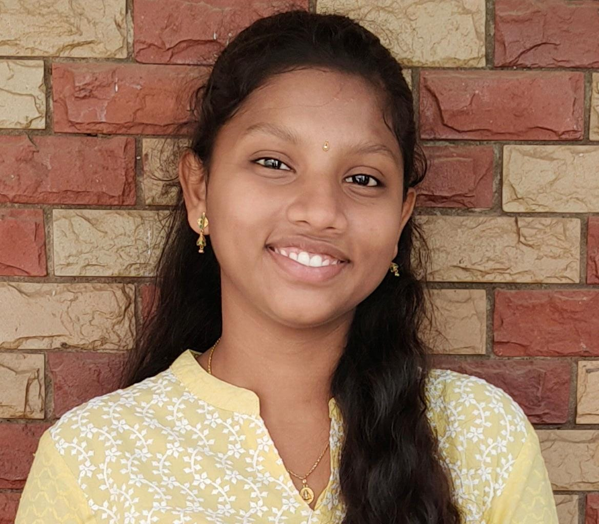

GONAPA SANJANA
Email:gonapa.sanjana@gmail.com
mobile:8309313252 |
 |
OBJECTIVE
I am seeking opportunities to join a company that can help me in enhancing my skills, strengthening my knowledge and realizing my potential. I am willing to explore a wide variety of opportunities that can help me gain perspective.
EDUCATIONAL QUALIFICATIONS
| Year |
Institution |
Course |
Specialization |
Percentage of marks/CGPA |
| 2021-2025 |
Anil Neerukonda Institute of
Technology and
Sciences
|
B.Tech | Computer Science
and Engineering | 9.54
Up to 2-2 Semester
|
| 2019-2021 |
Srichaitanya Junior
College
|
Intermediate |
Mathematics
Physics Chemistry
|
9.78 |
| 2019 |
SVJ VN High
School
|
10th |
SSC |
9.8 |
TECHNICAL PROFICIENCIES:
Programming Languages: C, Python, Java, DataStructures and Algorithms,Advanced DataStructures
Operating Systems: Windows
Design Software: Computer graphics basics
Secondary Technical Skills: Computer Networks, Operating Systems ,Database Management Systems,Competitive Programming, Design Analysis and Algorithms, Compiler design
CERTIFICATIONS:
Certified by NPTEL on completion of Programming in java
Certified by NPTEL on completion of Programming,Data Structures and Algorithms Using python
Certified by OASIS INFOBYTE on Completion of Internship in Java Development
Certified by BRAIN O VISION on Amazon web Services
Certified by Cisco Networking Academy on Completion of Python Essentials
Certified by Cisco Networking Academy on Completion of Python Essentials
TRAINING AND WORKSHOPS:
Attended a workshop and 24hours Hackthon on AMAZON WEB SERVICES
EXTRA CURRICULAR ACTIVITIES:
Member of NSS Club of ANITS
Member of CSI(Computer Society of India),ANITS
STRENGTHS:
Good communication skills
Good leadership qualities
Ability to work under stress
Self-motivated
PROJECTS:
Project Name : ONLINE MOVIE TICKET BOOKING SYSTEM
Role: Documentation and Project Management Team Size :4
To streamline the ticket booking process to reduce manual workload for theaters.
To Provide a user-friendly interface for seamless browsing and selection of movie listings.
Project Name: NUMBER GUESSING GAME
Role: Project Management Team Size :1
The fun and easy project “Guess the Number” is a short Java project that allows the user to guess the number generated by the computer.
Project Name : ONLINE EXAMINATION
Role: Project Management Team Size :1
The project should be capable of the following functionalities. Login,Update Profile and Password,Selecting answers for MCQs,Timer and auto submit,Closing session and Logout
ACHIEVEMENTS:
Awarded first place in Eassy Writing competition in grade VIII.
Awarded Second place in Carroms intercollege Competition.
PERSONAL DETAILS
Father’s name: G Prasad Rao
Mother’s name: G Rajeswari
Date of Birth: 26-05-2004
Languages known: English, Telugu
Permanent Address: D-No. 1 - 12, Deppili Gonapaputtuga village, Kaviti Mandal, Srikakulam District, Andhra Pradesh, Pincode:532312
Hobbies: Playing Badminton, Listening Music.
REFERENCES
Tulasikrishna Balleda- Senior Data Engineer, National Grid UK
Contact: +44 7405 741739
tballeda@gmail.com
DECLARATION
I hereby declare that, the information furnished above is correct and true to the best of my knowledge and bear the responsibility of correctness of the mentioned particulars.
(G Sanjana)